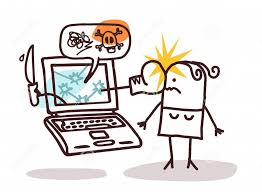

¿Que son las redes sociales?
Las redes sociales son plataformas digitales que facilitan la conexión, comunicación e interacción entre usuarios, permitiendo compartir contenido, opiniones y participar en conversaciones en línea. Estas plataformas se han convertido en herramientas esenciales para la comunicación personal, la creación de comunidades y la interacción con empresas. Los individuos no necesariamente se tienen que conocer antes de entrar en contacto a través de una red social, sino que pueden hacerlo a través de ella, y ese es uno de los mayores beneficios de las comunidades virtuales.En general, ingresar en una red social es muy sencillo ya que simplemente implica rellenar un cuestionario con datos personales básicos y así obtener un nombre de usuario y una contraseña que le servirán al usuario para ingresar de manera privada a la red. Mientras el usuario cumpla los requisitos para el registro en dicha red (por ejemplo, mayoría de edad), podrá hacerlo de manera simple y rápida.
¿Para que sirven?
-Comunicar y compartir. Las redes sociales funcionan como plataformas para el intercambio de información u opinión. Según el tipo de red, varían las funcionalidades y el tipo de comunicación que se establece entre los usuarios. En muchas de ellas, los usuarios pueden compartir imágenes, videos, documentos, opiniones e información.
-Mantener o establecer contacto. Las redes permiten a todas las personas que poseen acceso a Internet crearse un usuario en la red y conectarse con otros alrededor del planeta que también estén adheridos a esa red social. Permiten comunicarse con amigos, familiares, hacer nuevas amistades, buscar pareja, establecer relaciones laborales o profesionales.
-Informarse. El gran caudal de información que circula en las redes sociales permite a los usuarios mantenerse informados sobre acontecimientos importantes o temáticas de interés. La mayoría de las redes permiten crear un usuario y personalizar el tipo de información que se mostrará en la red.
¿Que es el ciberacoso?
El ciberacoso, o cyberbullying en inglés, es el acoso o la intimidación que se realiza a través de medios digitales como redes sociales, plataformas de mensajería, juegos en línea, y otros dispositivos electrónicos. Se caracteriza por el uso de internet y tecnologías digitales para molestar, amenazar, acosar, humillar, avergonzar o abusar de otra persona.
¿Como puedes prevenirlo?
Configurar la privacidad:
Ajustar la configuración de privacidad en redes sociales y otras plataformas para limitar la información que se comparte públicamente.
- No compartir información personal:
Evitar publicar información sensible como contraseñas, datos de ubicación o fotos íntimas.
- Ignorar las provocaciones:
No responder a mensajes o publicaciones hirientes, ya que esto puede alimentar el acoso.
- Denunciar el ciberacoso:
Si eres víctima o testigo de ciberacoso, es importante denunciarlo a la plataforma o a las autoridades competentes
- Buscar ayuda:
Si te sientes afectado por el ciberacoso, habla con un adulto de confianza, como padres, profesores o un profesional de la salud.